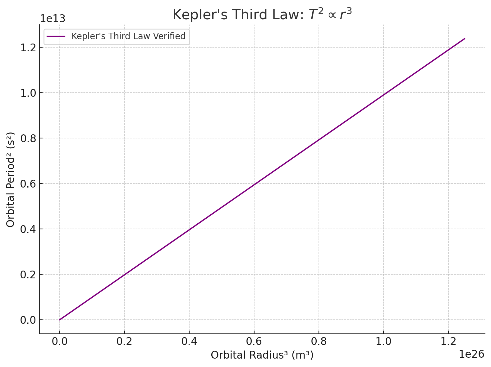

Problem 1
📘 1. Theoretical Derivation
We begin with Newton’s Law of Gravitation and centripetal force for an object in circular orbit.
🧠 Newton’s Law of Universal Gravitation:
\[
F = \frac{G M m}{r^2}
\]
Where: - \( F \): gravitational force - \( G \): gravitational constant \(6.674 \times 10^{-11} \, \text{Nm}^2/\text{kg}^2\) - \( M \): mass of central body (e.g., Earth or Sun) - \( m \): mass of orbiting body - \( r \): orbital radius
🌀 Centripetal Force for Circular Orbit:
\[
F = \frac{m v^2}{r}
\]
Set the two forces equal:
\[
\frac{G M m}{r^2} = \frac{m v^2}{r}
\]
Cancel \( m \) and solve for orbital velocity \( v \):
\[
v^2 = \frac{G M}{r}
\]
Now recall: [ v = \frac{2\pi r}{T} ]
Plug into velocity equation:
\[
\left(\frac{2\pi r}{T}\right)^2 = \frac{G M}{r}
\]
\[
\frac{4\pi^2 r^2}{T^2} = \frac{G M}{r}
\]
Multiply both sides by \( T^2 r \):
\[
4\pi^2 r^3 = G M T^2
\]
Now solve for \( T^2 \):
\[
\boxed{T^2 = \frac{4\pi^2}{G M} \cdot r^3}
\]
This is Kepler’s Third Law — the square of the orbital period is proportional to the cube of the orbital radius.
🌌 2. Implications for Astronomy
- Helps determine distances to planets (e.g. using their periods)
- Lets us calculate mass of celestial bodies by rearranging the formula
- Applies to moons, planets, satellites, even binary stars
🌍 3. Real-World Example: The Moon
Let’s apply Kepler’s Law to the Moon orbiting Earth.
- Orbital radius \( r = 384,400 \) km = \( 3.844 \times 10^8 \) m
- Mass of Earth \( M = 5.972 \times 10^{24} \) kg
We’ll plug into:
\[
T = 2\pi \sqrt{\frac{r^3}{G M}}
\]
💻 4. Python Simulation & Plot
Let’s write Python code to:
- Simulate planets with different orbital radii
- Calculate orbital periods
- Plot \( T^2 \) vs \( r^3 \) to verify linear relationship
import numpy as np
import matplotlib.pyplot as plt
# Constants
G = 6.67430e-11 # gravitational constant
M = 5.972e24 # mass of Earth in kg
# Orbital radii in meters (from 1e7 m to 5e8 m)
radii = np.linspace(1e7, 5e8, 100)
# Calculate orbital periods
T = 2 * np.pi * np.sqrt(radii**3 / (G * M))
# Kepler's law verification: T^2 vs r^3
T_squared = T**2
r_cubed = radii**3
# Plotting
plt.figure(figsize=(8, 6))
plt.plot(r_cubed, T_squared, label="Kepler's Third Law Verified", color='purple')
plt.xlabel("Orbital Radius³ (m³)")
plt.ylabel("Orbital Period² (s²)")
plt.title("Kepler's Third Law: $T^2 \\propto r^3$")
plt.grid(True)
plt.legend()
plt.tight_layout()
plt.show()

📊 Deliverables Recap
- ✅ Derivation: Kepler’s 3rd Law from Newtonian gravity
- ✅ Applications: Planetary motion, satellites, moon orbits
- ✅ Simulation: Period vs Radius in Python
- ✅ Plot: Linear relationship between \( T^2 \) and \( r^3 \)